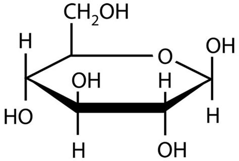

Než se budeme moct pustit to biologie jako takové, musíme si udělat trochu pořádek v biochemii.
Vezmeme úplné základy a hlavně z hlediska biologie. Projdeme si prvky, ze kterých je život složen a hlavní skupiny molekul, které z nich život poskládal.
Tři hlavní prvky (kyslík, uhlík a vodík) jsou v těle obsaženy v organických látkách (C + H) a ve vodě (H + O). Pamatuješ si rovnici fotosyntézy?
Dusík a fosfor jsou další prvky obsažené v organických molekulách, dodávají jim rozmanité funkce. Najdeme je hlavně v bílkovinách (N) a nukleových kyselinách (N + P). Vápník u lidí najdeme hlavně v kostech a svalech.
Důležité jsou ale i další prvky, k životu potřebujeme ionty jako je draslík, sodík, chlór i fluor.
Zásadní roli hraje také síra, která je chemicky podobná kyslíku.
Potřeba jsou ale i kovy, jako je železo, hořčík, kobalt, zinek, apod… Kde v lidském těle se vyskytuje železo?
| dusík (N) | kosti |
| sodík (Na) | krev |
| vápník (Ca) | elektrické impulzy |
| železo (Fe) | bílkoviny |
Odpověď je na dalším slidu.
| dusík (N) | bílkoviny |
| sodík (Na) | elektrické impulzy |
| vápník (Ca) | kosti |
| železo (Fe) | krev |
Prvky nejsou v těle organismů volně, jsou vázány v mnoha typech molekul. Pro život jsou typické biomolekuly, které se mimo prostředí živých organismů (třeba vesmír) vyskytují minimálně.
Často se jedná o složité struktury, polymery, složené z dílčích stavebních kamenů zvaných monomery.
Biomolekuly si můžeme popsat na sacharidech (v angličtině často “carbs”). Ty jsou zjednodušeně řečeno tvořeny monomery zvanými cukry, poskládáním většího množství cukrů vznikají polymery jako je třeba škrob a celulóza. To také znamená, že tyto polymery je možné zpět rozložit na cukry.
Sacharidy mají ve své struktuře kromě uhlíku a vodíku také poměrně hodně kyslíku, jsou proto rozpustné ve vodě. Slouží jako palivo (glukóza), zásobárna energie (škrob, glykogen), mají také strukturní funkce (celulóza).
Většina sacharidů má v názvu koncovku -óza, ve složitých molekulách přítomnost sacharidů značí termín “glyko”. Kolik sacharidů s koncovkou -óza znáš?
Chemická struktura sacharidu glukózy, vysoké množství kyslíku.
Živé organismy jsou organizované, vnímají své okolí a přizpůsobují se mu (adaptují se). Rostou a rozmnožují se, udržují stále vnitřní prostředí (homeostázi). K tomu všemu potřebují různé látky a energii. Proto jsou metabolicky aktivní.
Živé organismy nejsou uzavřené systémy, neustále se něco rozpadá a vytrácí - spěje k chaosu. Pomocí metabolismu (energetické a látkové přeměny) se živé věci opravují a rostou - spějí k pořádku. Platí zákon zachování energie (energie nevzniká ani nezaniká, jen se mění), tvořit pořádek tedy lze jen tvorbou chaosu někde jinde.
Proto jsou v živých organismech provázány dva procesy. Katabolismus je rozklad složitých látek za uvolnění energie. Anabolismus je tvorba složitých látek za spotřeby energie.
Metabolismus v těle živých organismů umožňují biokatalyzátory zvané enzymy. Enzymy jsou převážně bílkoviny, během reakce ale bývají obohaceny o dodatečné látky. Enzymy bývají pojmenované podle typů reakcí, které provádějí a substrátu (látky, na které působí). Jméno většiny enzymů je zakončené příponou -áza.